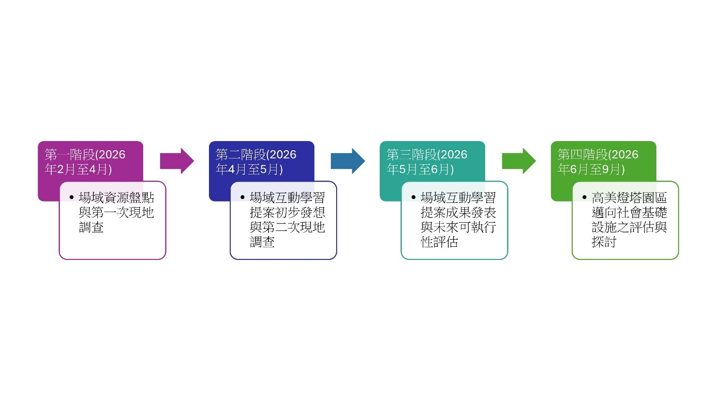

城鄉遺產的跨域整合與價值轉譯：
以地方大學通識教育課程之USR實踐經驗為例
劉鎮輝
關鍵字：城鄉遺產; 再脈絡化; 社會—生態系統; 去中心化生態博物館網絡; 社會基礎設施; 關係人口
摘 要
在當前大眾觀光高度支配下，城鄉遺產常陷入剛性割裂與過度商品化之去脈絡化困境。本研究以高美重要濕地之自然生態、高美燈塔園區之海事歷史，以及高西里文興宮之聚落信仰作為實證場域，採用行動研究法結合大學通識教育課程，建立三重實證證據鏈，深入探究城鄉遺產再脈絡化與網絡治理之實踐路徑。
研究結果成功驗證三大理論層次之實證價值。首先，在「社會—生態系統（SES）」層次，實證指出廣達734.3公頃之高美濕地，因臺中港興建引發之突堤效應，造成海域地貌與環境變遷；1967年興建之高美燈塔，則於冷戰期間與美軍飛機油料補給產生緊密連結，後續又因前述海域變遷而停燈閒置多年；作為前述濕地與燈塔生成背景之高西里漁村建築（背海防風）及文興宮王爺信仰，則與兩者形成具備深層時空因果交織的人地共生系統。其次，在「去中心化生態博物館網絡（DEM）」層次，導入現地保存範式，經由本研究連結課程之10組專案企劃原型，透過「空間中介物」之感官轉譯（包括濕地物種彩繪、燈塔記憶拼圖與木質手作擲筊等），有助於有效抵抗無地方性危機，將一次性觀光客轉化為具備在地認同之「關係人口」。最後，在「社會基礎設施（SI）」層次，針對高美燈塔園區委外營運之商業模式，提出補強公共性缺口之實踐路徑，將其擴延為強化互動體驗學習，以及深度連結社區與地方組織參與之社會基礎設施。
本研究以高美濕地及其鄰近聚落（以高西里為主）作為實證空間範疇，串聯具備法定身分之自然與文化遺產，以及緊鄰之社區場域與常民信仰，提出城鄉遺產再脈絡化之創新實證解析，並期待能透過公私協力（PPP）平台建構，孵育多元關係人口，進而落實永續共伴之城鄉遺產網絡治理發展目標。
在全球化與大眾觀光浪潮的衝擊下，傳統城鄉聚落在轉型為消費地景的過程中，常面臨歷史脈絡被抽離、地方感被標準化符號侵蝕的空間困境。地理學家 Edward Relph (1976) 曾提出「無地方性（Placelessness）」之概念，警示當一個地方獨特的歷史紋理、常民生活與空間本體，被均一化、商品化的觀光消費符號所取代時，將導致該地域主體性的稀釋，並使在地社群與其土地產生情感割裂 (Liu, 2024)。
本研究以位於臺中市清水區之「高美濕地及其鄰近聚落（以高西里為主）」（以下簡稱「本研究場域」）作為實證空間範疇，探討由法定之自然生態遺產（高美國家級重要濕地）與歷史文化遺產（高美燈塔）等兩大法定文化與自然資產，與其長久共存，且尚非法定遺產之生活基底（高西里聚落／文興宮無形信仰空間），三者之間在歷史與物理地景上互為因果、緊密互動與共生的網絡關係。
本研究旨在探討如何透過大學通識教育課程的導入，並將經由課程教學推動之專題學習歷程與具體成果，定位為推動城鄉遺產「再脈絡化（re-contextualization）」之「前導性發想」，並為未來以高美燈塔園區作為永續協力平台之城鄉遺產網絡建構，奠定實證研究之執行成果與推動基礎。
為探討本研究場域之複雜地景的再脈絡化路徑，共分以下三個部分進行系統化學理探討：第一，探討三大遺產之間的「時空共生與因果交織」關係，並引入「社會—生態系統（Social-Ecological System, SES）」之解析視角 (Ostrom, 2009)，理解本研究場域之水陸交界帶的人地變遷；第二，聚焦於「去中心化生態博物館網絡（Decentralized Ecomuseum Network, DEN）」模式（Corral, 2010），論證如何透過「空間中介物（spatial mediators）」之感官轉譯設計來抵抗「無地方性」危機 (Assalamah & Hilza, 2025; Longo & Faraci, 2023; Liu, 2024)；第三，引入「社會基礎設施」（Social Infrastructure, SI）理論 (Klinenberg, 2018；劉鎮輝，2025)，剖析歷史建築在市場導向再利用下的公共性缺口，並定位大學專題式學習成果，以及相關實地空間檢核之前導價值。
本研究依據行動研究法之核心價值與原則，打破傳統「保持距離的觀察者」之研究範式，結合大學通識教育課程，帶領學生兩度前往研究場域進行現地調查，並於研究歷程中，持續與場域組織及相關人員進行交流及探討，並邀請場域人士協助檢視與評量課程小組研提之互動學習方案。
課程結束後，則實際入住高美燈塔園區，實際體驗園區之旅宿服務內容，也藉此評估未來以此園區推動及發展為社會基礎設施之可能性與適切性。
本研究參酌蔡清田（2000）之行動研究模式，研究期程為2026年2月至2026年9月，為期八個月。前述本研究之研究流程如圖1所示。

圖1 本研究實證證據鏈研究流程圖
本研究參考Virginia Braun與Victoria Clarke (2006) 提出之主題分析法，針對研究計畫收集之三大類資料，包括：研究場域文獻資料、課程小組提案文本、場域據點體驗與觀察紀錄，與本研究所探討之三大理論，包括：社會—生態系統（SES）、去中心化生態博物館（DEN）與社會基礎設施（SI），進行對應及分析探討，並進一步提出各面向之研析重點。
本研究以「高美濕地及其鄰近聚落（以高西里為主）」作為實證對象，透過「行動研究法」連結大學通識教育課程之專題式學習，並建立「三重實證證據鏈」進行相互檢證與補強。研究結果成功驗證了三大理論層次在城鄉遺產再脈絡化與網絡治理上的學術與實務價值，具體研究結論歸納如下：
4-1.第一重：社會—生態系統下城鄉遺產之「時空因果交織與人地共生」
研究證實顯示，本研究場域之自然環境、海事遺產與聚落信仰，並非彼此孤立的空間切片，而是高度交織於「社會—生態系統」之城鄉遺產網絡與整合地景。
4-1-1.人地動態之因果反饋
1970年代臺中港興築與其堤防工程所引發之「突堤效應」，阻斷了沿岸漂沙，意外改變當地地貌，並形成了目前名聞遐邇，且廣達734.3公頃之高美濕地（法定自然遺產）；而此一大規模之環境變遷，進而導致於1967年興建之高美燈塔（法定文化遺產）於1982年停燈閒置。
4-1-2.常民聚落之社會生活基底
目前並無法定遺產身分之臺中市清水區高西里漁村聚落（當地居民生活場域），以及里內之文興宮（無形信仰空間），則承載了三百年以上之王爺信仰與生活記憶，除前述之文興宮，則留有「船頭公」、「目頭公」等特殊宗教景觀，當地居民也經由「背海防風」之建築形式，回應當地之自然環境與日常生活需求。
本研究透過社會—生態系統之「再脈絡化」模式，成功打破了法定自然與文化遺產之概念框架與空間邊界，並強化與周邊之聚落生活及宗教信仰之連結與整合，建立人地共生之城鄉遺產保存與活化發展之嶄新架構。
4-2.第二重：去中心化生態博物館網絡下「空間中介物」之價值轉譯
本研究實證表明，導入「現地保存」之「去中心化生態博物館網絡」，能有效克服傳統單一場館之發展限制，並建立再脈絡化之場域單位或組織之互動連結。
4-2-1.空間中介物之價值轉譯
經由本研究連結課程於期末階段完成之10組互動體驗活動企劃，具體落實城鄉遺產之價值轉譯的探究與思考成果；雖然因應課程之EMI教學模式，以及現地迫切之英語觀光旅遊服務之量能提升需求，最終係以國際觀光客或國際學生作為主要的服務對象，不過，諸如以高美燈塔園區作為主要實踐場域之記憶拼圖、八角手作燈籠，或是以高美濕地物種作為主要訴求對象之生物仿生藝術彩繪，乃至聚焦於文興宮宗教體驗之彩繪擲筊與中英雙語解籤等原型提案，皆能具體回應研究場域之核心價值內涵，並經由轉譯過程，重建遊客與城鄉遺產之深度連結，也藉此強化「空間中介物」的核心角色與具體功能。
4-2-2.對抗無地方性與培育關係人口
前述透過多重感官、體驗式與遊戲化之設計，也將隱形且晦澀的地方知識轉譯為具備身體實踐感的探索歷程，有助於翻轉當地「重美景、輕生態」之海域觀光，以及「打卡即走」之文化旅遊模式，且能經由跨場域之串聯與整合，持續將一次性之大眾觀光客，轉化為具備在地認同感之「關係人口」，並有助於抵抗「無地方性」發展危機。
4-3.第三重：歷史建築再公共化與社會基礎設施之實地檢核與未來展望
本研究之三個主要場域當中，具備歷史建築法定身分之高美燈塔，目前整體園區已轉型為提供泊宿與餐飲服務之商業園區，在不影響目前由交通部航港局與小鹿文娛股份有限公司之合作模式架構下，本研究提出了一條補強公共性之「社會基礎設施」實踐路徑。
4-3-1.草根能動性與空間再公共化
基於小鹿文娛股份有限公司係邀請地方組織建立高美燈塔園區營運團隊之執行模式下，除滿足交通部航港局所委託之園區商業服務，地方營運團隊也更有意識想要開展與地方之深度連結，經由導入更多具有草根能動性之地方組織參與園區之商業服務（目前園區之餐飲服務及選物販售即為如此），則是目前已持續醞釀及籌備中之未來發展願景。
經由本研究連結課程之第二次現地調查所使用之E棟複合展演空間，也是此一未來發展模式之先期嘗試，並實證連結第三方協作力量，將能突破商業營運模式下之邊界與屏障，重構歷史空間之公共對話與交融功能。
4-3-2.實地場域檢核與未來展望思考
本項研究計畫主持人也實際入住園區進行體驗與觀察，並結合當時正在舉辦之地方藝術節活動，實證未來若能持續貫徹與落實互動體驗活動之推動與發展，將有助於強化跨場域之串聯與整合，也能經由將高美燈塔園區擴延為社會基礎設施，具體支持與回應前述第一重社會—生態系統重構，以及第二重去中心化生態博物館網絡之推動及發展，提供真實物理空間與未來網絡化之治理基礎。
Assalamah, T. M., & Hilza, I. F. (2025). Digital literacy and cultural narratives for social sustainability in primary education transformation. ENTITA: Jurnal Pendidikan Ilmu Pengetahuan Sosial dan Ilmu-Ilmu Sosial, 7(1), 1–24.
Braun, V., & Clarke, V. (2006). Using thematic analysis in psychology. Qualitative Research in Psychology, 3(2), 77–101.
Coffee, K. (2022). Museums and social responsibility. Routledge.
Corral, Ó. N. (2010). Japan ecomuseums: Global models for concrete realities. Cadernos de Sociomuseologia, 38, 217–244.
Klinenberg, E. (2018). Palaces for the people: How social infrastructure can help fight inequality, polarization, and the decline of civic life. Crown.
Longo, M. C., & Faraci, R. (2023). Next-generation museum: A metaverse journey into culture. Sinergie Italian Journal of Management, 41(1), 147–176.
Ostrom, E. (2009). A general framework for analyzing sustainability of social-ecological systems. Science, 325(5939), 419–422.
Relph, E. (1976). Place and placelessness. Pion.
Liu, Z.-H. (2024). Mechanism of sustainable development of "placeness": Taking ecomuseum as the method. In W.-C. Lai (Ed.), ICOM-ICR 2023 annual conference proceedings (pp. 128–139). Taiwan Museum Association.
內政部（2018）。高美重要濕地（國家級）保育利用計畫。內政部。
交通部航港局（2021）。臺中市歷史建築高美燈塔修復及再利用計畫。
楊士賢（2007）。台中縣清水鎮高美五里的廟宇與祀神。臺灣文獻，58(4)，357-398。
臺中市政府農業局（2025）。高美野生動物保護區保育計畫（114年8月修訂版）。
劉鎮輝（2025）。六堆生態博物館實踐機制探討：以左堆聚落展為例。社區營造學報，4(1)，58-75。
蔡清田（2000）。行動研究及其在教育研究上的應用。載於國立中正大學教育學研究所（主編），質的研究方法（頁 307–333）。麗文文化。